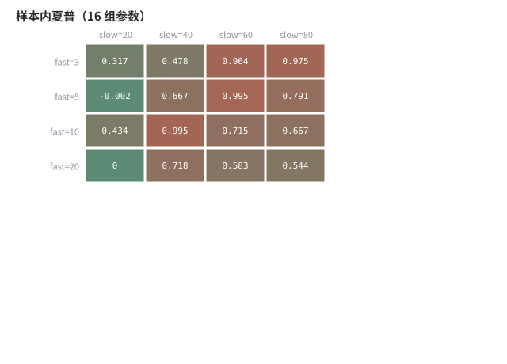
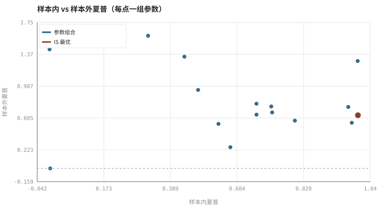

第 28 章过拟合、多重检验与滚动样本外
试了 20 组参数再挑最好的那一组，等于做了 20 次实验却只报告一次 p 值。
本章位置：第 26～27 章给出可执行的净值与指标，本章检验它们是否只是搜索出来的幻觉；第 29 章 · 订单执行、滑点与市场冲击 开始处理真金白银下单时的最后一公里。
调参是超参搜索，样本外是测试集。max(trials) 天然带有正向偏差，所以要么扣 Bonferroni，要么用 TimeSeriesSplit 把选择过程也纳入评估。
- 能量化参数网格搜索带来的样本内乐观偏差。
- 能说明多重检验为何抬高假阳性率，并给出 Bonferroni 思路。
- 能实现 walk-forward（滚动训练/验证）评估。
- 能把「冻结协议」写成可执行的样本外切分。
§知识点地图
每个知识点都配了 1～2 个扩展学习链接；本章完整资源清单见 扩展学习。
| # | 知识点 | 扩展学习 | 状态 |
|---|---|---|---|
| 1 | 样本内与样本外 | Walk forward optimization · Overfitting | 正文已覆盖 |
| 2 | 参数网格搜索 | Overfitting · Data dredging | 正文已覆盖 |
| 3 | 多重检验与 Bonferroni | p-hacking · Data dredging | 正文已覆盖 |
| 4 | 数据窥探 | Overfitting · Data dredging | 正文已覆盖 |
| 5 | IS/OOS 夏普落差 | Sharpe ratio · Sortino ratio | 正文已覆盖 |
| 6 | walk-forward | Overfitting · Data dredging | 正文已覆盖 |
| 7 | 冻结评估协议 | Overfitting · Data dredging | 正文已覆盖 |
| 8 | Deflated Sharpe 思想 | Price–earnings ratio · Stock valuation | 正文已覆盖 |
§28.1搜索次数也是实验次数
P(至少一次假阳性) = 1 − (1 − α)^M ，M 为尝试过的策略/参数数
α=0.05、M=20 时，至少出现一次「显著」结果的概率约 64%。这不是统计技巧的问题，而是报告口径的问题：只报告胜出的那组参数，等于隐去了另外 19 次试验。Bonferroni 修正把单次阈值改成 α/M，是最保守也最容易实现的一层防线。
§28.2样本内最优 ≠ 样本外最优
在合成数据上做网格搜索，可以清楚看到：样本内夏普最高的参数组合，在样本外往往只是中游。原因有两层：一是参数在样本内拟合了噪声，二是「挑最大值」这个动作本身带有正向选择偏差。第 24 章的论文复现清单在这里变成了一段可运行的实验。
§28.3walk-forward：把切分滚动起来
- 把样本分成若干连续窗口，每个窗口只用前段选参数。
- 在紧接着的后段（模型从未见过）执行并记录净收益。
- 窗口整体前移，重复；最后把所有样本外段拼成一条净值曲线。
- 报告这条曲线的夏普，而不是任何单段的最优值。
这等价于 TimeSeriesSplit 交叉验证。关键是不能打乱时间顺序，也不能让验证段的任何统计量回流到训练段。
§Python 分析实例
实验 28-1 · 16 组参数的样本内/外落差与滚动验证
#!/usr/bin/env python3
# -*- coding: utf-8 -*-
"""在同一条合成价格上扫描均线参数，比较 IS 最优组合的 OOS 排名与中位数。
数据为合成数据或模型示意，仅用于教学，不构成投资建议。
"""
from __future__ import annotations
import math
import pathlib
import random
import statistics
import sys
sys.path.insert(0, str(pathlib.Path(__file__).resolve().parents[3] / "tools"))
from chart import Chart, candlestick, heatmap, BLUE, RED, GREEN, AMBER
FIG = pathlib.Path(__file__).resolve().parents[1] / "fig"
FIG.mkdir(exist_ok=True)
random.seed(7)
# ---- 参数区 ----
N, SPLIT = 800, 400
START, DRIFT, VOL = 50.0, 0.0003, 0.014
FAST_GRID = (3, 5, 10, 20)
SLOW_GRID = (20, 40, 60, 80)
FEE, ANN = 0.0005, 252
ALPHA = 0.05
# ---- 计算与作图 ----
rng = random.Random(7)
px, prices = START, []
for _ in range(N):
px *= (1 + rng.gauss(DRIFT, VOL))
prices.append(px)
rets = [prices[t] / prices[t - 1] - 1 for t in range(1, N)]
def sma(series, w):
return [None if i + 1 < w else statistics.fmean(series[i + 1 - w:i + 1])
for i in range(len(series))]
def sharpe(xs):
s = statistics.pstdev(xs)
return statistics.fmean(xs) / s * math.sqrt(ANN) if s else 0.0
def strategy(fast, slow):
f, s = sma(prices, fast), sma(prices, slow)
sig = [0] * N
for t in range(N):
if f[t] is not None and s[t] is not None:
sig[t] = 1 if f[t] > s[t] else 0
out = []
for t in range(1, N):
cost = FEE if t > 1 and sig[t - 1] != sig[t - 2] else 0.0
out.append(sig[t - 1] * rets[t - 1] - cost)
return out
rows, records = [], []
for fi, fast in enumerate(FAST_GRID):
row = []
for slow in SLOW_GRID:
rr = strategy(fast, slow)
is_s, oos_s = sharpe(rr[:SPLIT]), sharpe(rr[SPLIT:])
row.append(is_s)
records.append((fast, slow, is_s, oos_s))
rows.append(row)
best = max(records, key=lambda x: x[2])
oos_sorted = sorted(x[3] for x in records)
rank = sum(1 for x in oos_sorted if x > best[3]) + 1
median_oos = statistics.median(oos_sorted)
bh_oos = sharpe(rets[SPLIT:])
m_tests = len(records)
fam_rate = 1 - (1 - ALPHA) ** m_tests
heatmap(FIG / "28-heatmap.svg", rows,
["fast=%d" % f for f in FAST_GRID], ["slow=%d" % s for s in SLOW_GRID],
title="样本内夏普（%d 组参数）" % m_tests,
vmin=min(min(r) for r in rows), vmax=max(max(r) for r in rows))
print("热力图:", str(FIG / "28-heatmap.svg"))
c = Chart(FIG / "28-isoos.svg", "样本内 vs 样本外夏普（每点一组参数）",
xlabel="样本内夏普", ylabel="样本外夏普")
c.scatter([x[2] for x in records], [x[3] for x in records], BLUE,
label="参数组合", radius=4)
c.scatter([best[2]], [best[3]], RED, label="IS 最优", radius=6)
c.hline(0.0, "#9aa6b2")
print("散点图:", c.save())
print("M=%d 至少一次假阳性概率=%.1f%% Bonferroni 单次阈值=%.4f" %
(m_tests, 100 * fam_rate, ALPHA / m_tests))
print("IS 最优 fast=%d slow=%d IS=%.3f OOS=%.3f | OOS 排名=%d/%d 中位=%.3f 持有基准=%.3f" %
(best[0], best[1], best[2], best[3], rank, m_tests, median_oos, bh_oos))操作：观察 IS 最优点（红色）在 OOS 轴上的位置；把 ALPHA 固定，把参数网格扩大到 40 组，看 1−(1−α)^M 如何上升。 预期与判读：样本内挑出的最优组合在样本外通常只排中游，甚至为负；M 次试验使「至少一次显著」的概率大幅上升。报告 M，或冻结协议，二者必须做到一个。
改参数看趋势：把 DRIFT 改成 0（纯噪声），IS 与 OOS 夏普会趋近于无相关。 文件位置：part5/28-overfitting/code/28-overfit.py


代码块右上角可一键复制；仓库里的 code/*.py 由 tools/extract_code.py 从这些代码块自动抽取。脚本只用标准库、固定 random.seed(7)，运行后写出 fig/*.svg；批量运行用 ./tools/run_python.sh。
§本章参考资料
按本章知识点挑选的精读资料；更多检索入口见 扩展学习。
Walk forward optimization
百科 · 参考资料滚动训练/验证的样本外检验
怎么用：滚动训练/验证的样本外检验https://en.wikipedia.org/wiki/Walk_forward_optimization
§常见误区
- 试过很多参数只报告最好的一组。
- 样本外段被用来反复调参，逐渐变成样本内。
- 随机打乱时间序列做交叉验证。
- 忽略交易成本对高频参数组合的额外惩罚。
§习题与思考
- 推导
1−(1−α)^M并计算 M=50 时的数值。 - 在示例里实现三段 walk-forward，把样本外段拼成一条净值曲线。
- 说明为什么「样本外也调过几次」会破坏评估的独立性。
§扩展学习
以下资料按本章知识点挑选，可直接精读或对照真实数据；知识点地图里每一条也挂了 1～2 个直达链接。
- Overfitting（百科）：样本内拟合、样本外失效
Overfitting - Data dredging（百科）：反复试参数造成的假发现
Data dredging - p-hacking（百科）：多重检验下的假阳性膨胀
p-hacking - Walk forward optimization（百科）：滚动训练/验证的样本外检验
Walk forward optimization - SSRN（机构）：金融学预印本与因子研究检索
SSRN
继续扩展：在 Google Scholar 检索本章相关论文 · 在 MIT OCW 检索配套课程 · 在 arXiv 检索预印本 · 全书参考资源总表 · 附录 A 速查与链接总表
§延伸阅读与内链
- 第 24 章 · 怎样读一篇因子论文：从摘要到可复现 论文复现清单；第 31 章 · 投资政策说明书与长期复盘 把冻结协议写进 IPS。